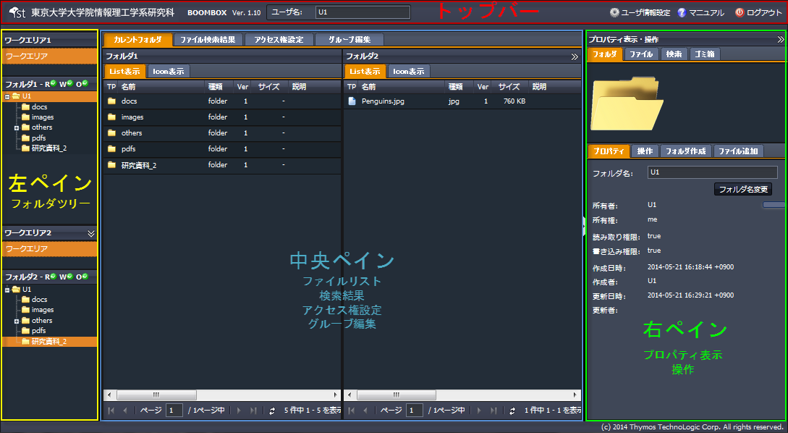

SecretFilesマニュアル
4.SecretFilesサービス(操作編)
4.1基本画面構成
ここでは、SecretFilesサービスで使用する画面についてご説明します。
画面は次のように構成されています。

詳しくは、
「3.2 各ペインの説明」
をお読みください。
（*ペインとは、目的に応じて表示する、画面内の区画の事をさします。）
操作中、マウスボタンを左クリックしたり、右クリックしたりした場合には、そのクリックした場所や操作の内容に応じて新たなペインを表示したり、ポップアップウィンドウを表示したり、右クリックメニューを表示したり、あるいはメッセージを表示したりします。